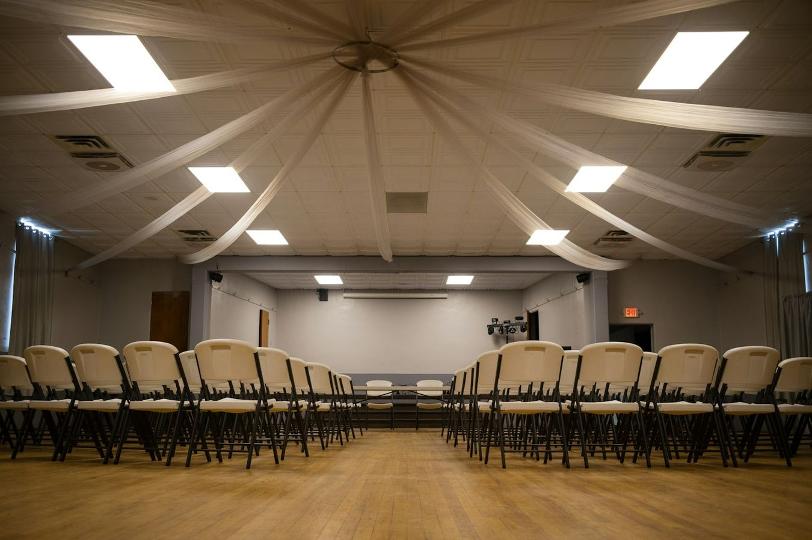

Une question, une idée, un avis
Écrivez à Camille. On vous répond.
Une question sur une mesure, une idée pour votre rue, un soutien ou un désaccord : tout est bienvenu. Écouter, c’est aussi entendre ce qui ne va pas.
Chaque message est lu par l’équipe. Réponse sous 48 heures.

Votre message
3 minutes suffisent
Un outil automatique classe les messages par thème pour qu’ils arrivent vite à la bonne personne. Une personne de l’équipe vous répond toujours, jamais un robot.
- Vous écrivez votre message, en quelques lignes.
- Il arrive chez le référent du thème.
- Il vous répond par e-mail sous 48 heures.
Message bien reçu, merci !
Un membre de l’équipe vous répond sous 48 heures, à l’adresse indiquée.
Lire le programmeQuestions fréquentes
Ce que l’on nous demande souvent
Camille Ferrand est-elle soutenue par un parti ?
Non. Elle conduit une liste citoyenne, sans étiquette. Ses colistiers viennent de tous les horizons et de tous les quartiers de Vallenoire.
Faut-il adhérer à quelque chose pour aider la campagne ?
Non. Vous pouvez donner 2 heures par semaine sans adhérer à rien et arrêter quand vous le souhaitez. Voir les missions.
Comment sont financées les mesures du programme ?
Par les économies d’énergie des bâtiments communaux (mesure 8) et par des choix dans le budget, publiés chaque année en une page (mesure 23). Le détail chiffré sera présenté avec le programme complet.
La taxe foncière va-t-elle arrêter d’augmenter ?
La mairie ne décide que du taux communal : il ne bougera pas pendant le mandat. En revanche, l’État revalorise chaque année la base de calcul pour tout le pays. Votre avis peut donc encore évoluer légèrement, mais la part décidée par la commune n’augmentera pas.
La vidéoprotection va-t-elle être installée partout ?
Non. Seulement aux endroits signalés par les habitants, avec une charte publique et une évaluation chaque année (mesure 14). La priorité reste la présence humaine : agents à pied, médiateurs, éclairage.
Je ne suis pas d’accord avec une mesure. Est-ce utile de l’écrire ?
Oui. Chaque désaccord est lu et transmis au référent du thème. Il peut faire évoluer une mesure avant la présentation du programme complet.
Se parler en personne
Vous préférez de vive voix ?
-
Au marché, le samedi
Camille et l’équipe tiennent un stand sous les arcades, de 9 h à 12 h.
-
En permanence de quartier
Une permanence par mois dans chacun des 6 quartiers.
Voir les dates -
Par e-mail
Directement à l’équipe : utilisez le formulaire ci-dessus.